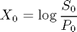
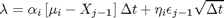
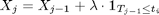
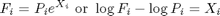

Basis Forward Curve Simulation
A two factor Monte-Carlo model that simulates a commodity basis term structure based on long and short contract months.
Contents
CommodityBasisSpread
function [X,F]=CommodityBasisSpread(F,P,T,expiry,dt,alpha,eta,mu,epsilon)
Input Parameters
| S0 | Initial forward rates |
| P | Simulated hub forward rates |
| dates | valuation dates |
| expiry | contract expiry dates |
| sig | volatility of long and short contracts |
| mu | long term mean of ratio X |
| dt | length of time slice in years |
| kappa | rate of mean reversion |
| eta | random deviants |
Output Parameters
| X | Simulated basis spread |
| S | Simulated hub forward rates |
F = [F;zeros(length(T)-1,length(expiry))];
%X = zeros(length(T)+1,length(expiry));
X = zeros(length(T)-1,length(expiry));
Initial spread

X(1,:) = log(F(1,:)./P(1,:));
% Vector of simulation dates
j=2:length(T);
% Iterate across contract months
for i=1:length(expiry(2,:))
Generate a vector of random movements of the forward rate for each contract month:

lambda = alpha(i) * (mu(i) - X(j-1,i)) * dt + eta(i) * epsilon(j-1) * sqrt(dt);
Flatten spread rates where node date >= contract expiry

X(j,i) = X(j-1,i) + lambda .* (T(j-1) <= expiry(2,i));
Evolve the forward rate by adding the spread to the base rate

F(j,i) = P(j,i) .* exp(X(j,i));
end
end